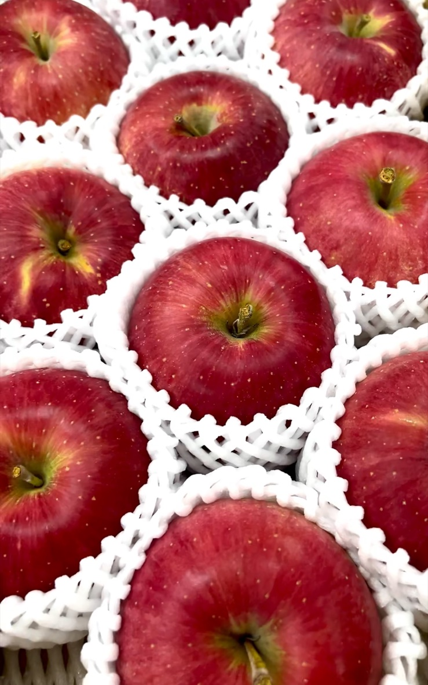
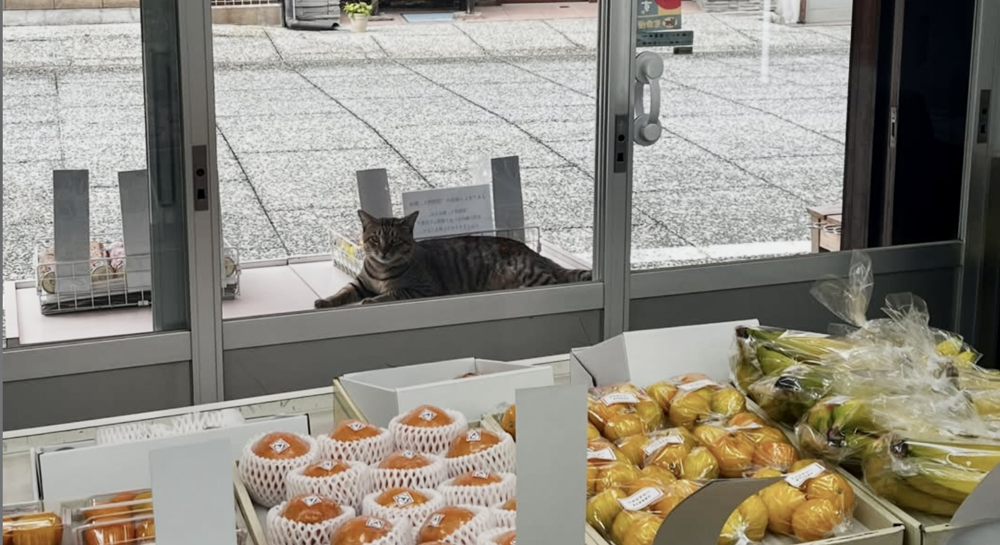
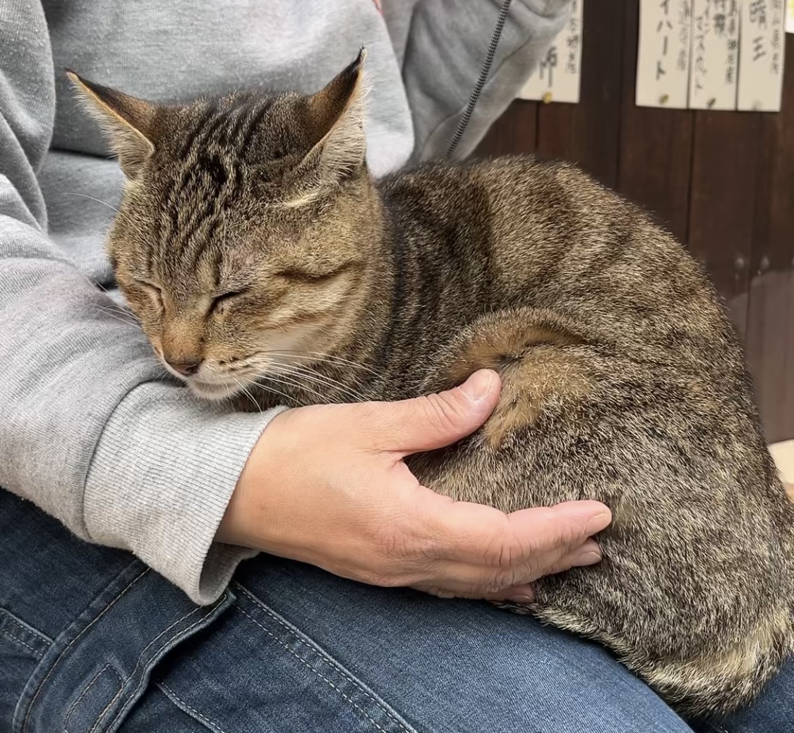
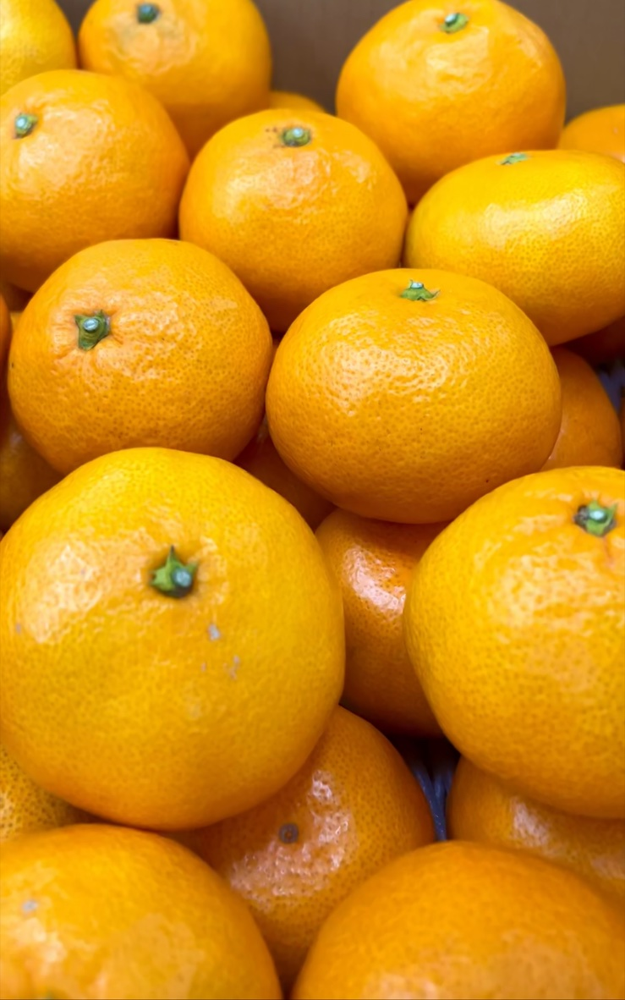

ONOMICHI · FUKUNAO FRUITS
旬を見極め、
尾道の暮らしへ。
尾道で70年以上。季節の一番おいしい果物を、まっすぐに。
ABOUT US
今日の「おいしい」を、
見つけに行く店。
福直フルーツは、尾道で70年以上続く果物専門店です。旬、産地、香り、手に取ったときの重みまで。毎朝の仕入れで確かめた果物を、日々の食卓や大切な贈りものへお届けします。
季節が移ろうたび、店先の色も変わります。どうぞ、今いちばんの果実を探しにお立ち寄りください。


A LITTLE FRIEND
果物を見守る、
小さな看板猫。

ひと休みの時間。OUR STANDARD
果物を選ぶことは、
季節を読むこと。
産地や品種だけでなく、香り、張り、熟れ具合まで。その日の状態を見ながら、店頭に並べる果実を選んでいます。
- 01季節の移ろいを知る
- 02産地と品種を見極める
- 03ひとつずつ状態を確かめる
- 04いちばん良い頃にお渡しする

PICK OF THE DAY
今日の、
おすすめ果実。
季節のいちばんおいしい果実を、店頭とInstagramでご案内しています。
Instagramの投稿を見る →※取扱商品・入荷状況は季節や天候により変わります。
SHOP INFORMATION
福直フルーツ
- 住所
- 〒722-0045
広島県尾道市久保2丁目7-2 - FAX
- 0848-37-6665
- 営業時間
- 日・月 9:00〜16:00
火・木・金・土 9:00〜18:00 - 定休日
- 水曜日
- 駐車場
- なし